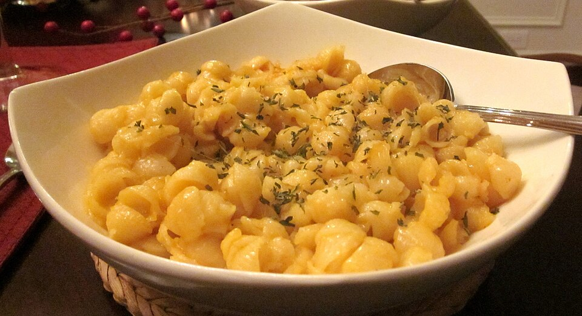

Mac & Cheese
Home

“
Macaroni and Cheese” by
Sumeet Jain,
CC BY-SA 2.0
Description
Another great comfort food that you can cook in bulk for easy meals throughout the week.
Ingredients
- 16oz pasta
- 1/2 stick butter
- 1/4 cup flour
- 2 cups milk
- 8oz cheddar cheese, shredded
- Salt & pepper
Steps
- Cook pasta to box directions. Drain well & set aside.
- Use the same pot to melt the butter. Add flour and stir into a roux. Cook for a few minutes.
- Slowly stir in milk to form a sauce base.
- Add cheese and stir until creamy. Then add pasta.
- Add salt and pepper to taste. Might I also recommend a little bit of curry powder and some dried herbs for a little bit of flavor? Then serve.